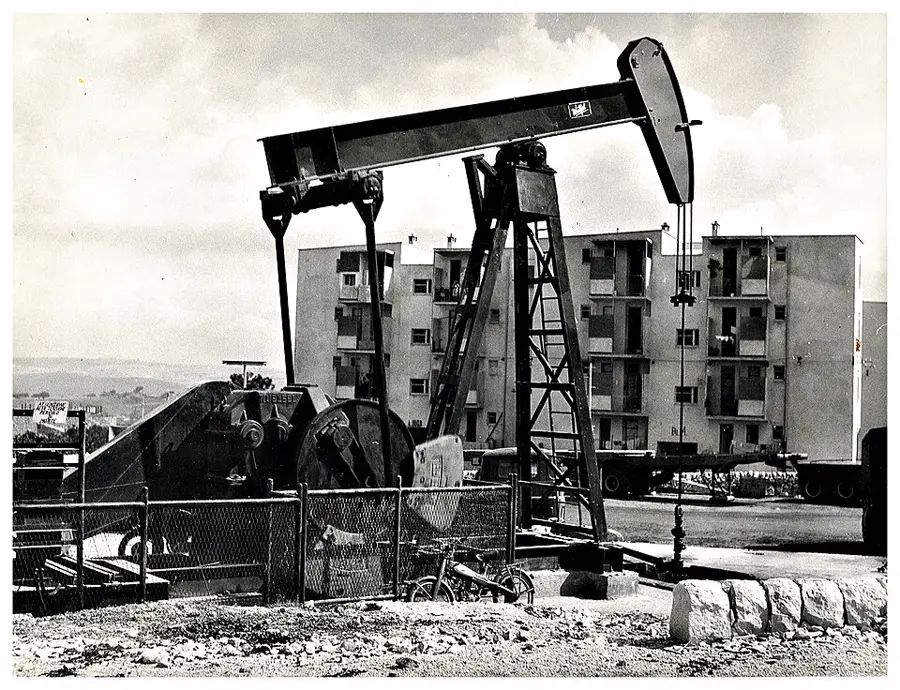

대표 로고대표 브랜드 마크
대표 로고대표 브랜드 마크에니 Eni
에니(Eni)는 이탈리아 로마에 본사를 둔 다국적 에너지 기업이다. 1953년에 설립되었으며, 세계 석유 슈퍼메이저 가운데 하나로 꼽힌다. 이탈리아 정부가 골든 셰어를 보유하고 있다.
최종 업데이트
에니는 어떤 브랜드인가
에니는 이탈리아의 다국적 에너지 기업으로, 세계 석유 슈퍼메이저 가운데 하나로 꼽힌다. 이름은 이탈리아어 Ente nazionale idrocarburi(국가 탄화수소청)의 옛 약칭에서 왔다.
설립 이후 건설, 원자력, 에너지, 광업, 화학·플라스틱, 정제·채굴·유통 장비, 호텔업, 섬유, 뉴스 등 여러 분야에서 사업을 했다. 2022년에는 약 €92.2 billion의 매출로 Fortune Global 500과 Forbes Global 2000에서 모두 111위를 기록했다.
2025년 12월 31일 기준 시가총액은 €48 billion이다. 이탈리아 정부가 33.084%의 골든 셰어를 보유하며, Euro Stoxx 50 지수의 구성 종목이다.
에니는 어떻게 시작되고 성장했나
에니는 1953년 기존 회사인 Agip이 설립했다. Agip은 1926년 유전을 탐사하고 석유와 그 파생물을 인수해 판매할 목적으로 만들어진 회사이다.
1953년 3월 Enrico Mattei가 에니의 회장으로 지명되었다. 1954년부터 북아프리카에서 광범위한 탐사권을 확보했으며, 이집트 정부와 합의하면서 산유국이 합작회사를 통해 동등하고 적극적인 역할을 맡도록 했다.
1957년에는 이란의 National Iranian Oil Company와 'Mattei formula'로 불리는 비슷한 합의를 추진했고, 1962년 10월 27일 Mattei가 탄 비행기가 Bascapè 인근에서 폭발했다.
에니의 브랜드 아이덴티티는 무엇인가
자동차 네 바퀴와 운전자 두 다리를 합친 여섯 다리 개 로고와 창업 회장 Enrico Mattei로 알려진 이탈리아의 에너지 슈퍼메이저이다.
에니의 대표 제품과 서비스는 무엇인가
에니는 원유와 천연가스를 다루는 에너지 기업이다. 설립 이후 건설, 원자력, 에너지, 광업, 화학·플라스틱, 정제·채굴·유통 장비, 호텔업, 섬유, 뉴스 분야에서도 활동했다.
1973년 10월 석유 위기가 닥친 뒤에는 알제리 국영 석유기업 Sonatrach와 천연가스 공급 계약을 맺었다. 1970년대 중반에는 유럽과 지중해 전역에 수천 마일 규모의 가스관망을 건설하는 계획을 세웠고, Trans-Mediterranean Pipeline이 개통된 뒤 리비아와 Boùri 유전 개발 계약을 맺었다.
1963년에는 Italgas의 지분 과반을 인수했다.
에니는 지금 어떤 상태인가
에니는 2025년 12월 31일 기준 시가총액이 €48 billion이다. 이탈리아 정부가 33.084%의 골든 셰어를 보유하고 있으며, 이 가운데 2.166%는 재무부가, 30.918%는 Cassa Depositi e Prestiti가 가지고 있다.
2024년에는 Forbes Global 2000에서 151위, Fortune Global 500에서 98위를 기록했다. Euro Stoxx 50 지수의 구성 종목이다.
에니 로고는 어떻게 변해왔나
대표 로고대표 브랜드 마크사진으로 보는 에니의 역사

자주 묻는 질문
에니는 어느 나라 브랜드인가요?
에니는 이탈리아의 에너지·산업재 브랜드입니다.
에니는 언제 설립되었나요?
에니는 1953년 설립되었습니다.
에니의 브랜드 아이덴티티는 무엇인가요?
자동차 네 바퀴와 운전자 두 다리를 합친 여섯 다리 개 로고와 창업 회장 Enrico Mattei로 알려진 이탈리아의 에너지 슈퍼메이저이다.
에니의 대표 제품은 무엇인가요?
에니는 원유와 천연가스를 다루는 에너지 기업이다.
에니는 현재 어떤 상태인가요?
에니는 2025년 12월 31일 기준 시가총액이 €48 billion이다.
에니의 창업자는 누구인가요?
에니의 창업자는 Enrico Mattei입니다(위키데이터 기준).
에니의 본사는 어디에 있나요?
에니의 본사는 로마에 있습니다(위키데이터 기준).
출처와 검증
에니 관련 참고: 공식 웹사이트 · 위키데이터 Q565594 · 한국어 위키백과 · 영어 위키백과. 브랜드명은 한글과 원어를 함께 표기하되 데이터에 없는 표기는 만들지 않습니다. 기원 국가·설립연도는 검수된 정의문에서 확인된 값을 우선하고, 없을 때만 공식 웹사이트 URL이 일치하는 위키데이터 개체의 값을 씁니다. 탄생일의 월·일은 위키데이터, 위키백과 정보상자, 본문 가운데 같은 연월로 확인되는 값만 싣고, 출처끼리 다르면 싣지 않습니다. 위키데이터 값은 2026-11-12 기준입니다.